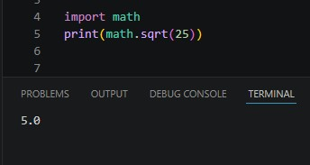
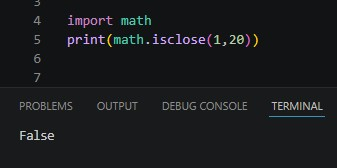

The math module, as the name might suggest, is a library of many math functions that aren’t built into python.
There’s the square root function, which returns the square root of a number, ‘math.sqrt(numberValue)’.

There's the also a function that returns true if two numbers are in proximity of each other, ‘math.isclose(num1, num2, num3)’. Num1 and num2 being whatever is being compared.

Those are just two of the many useful functions that the math module has to offer.
{% include 'partials/article_navigation.html' %} {% endblock %}